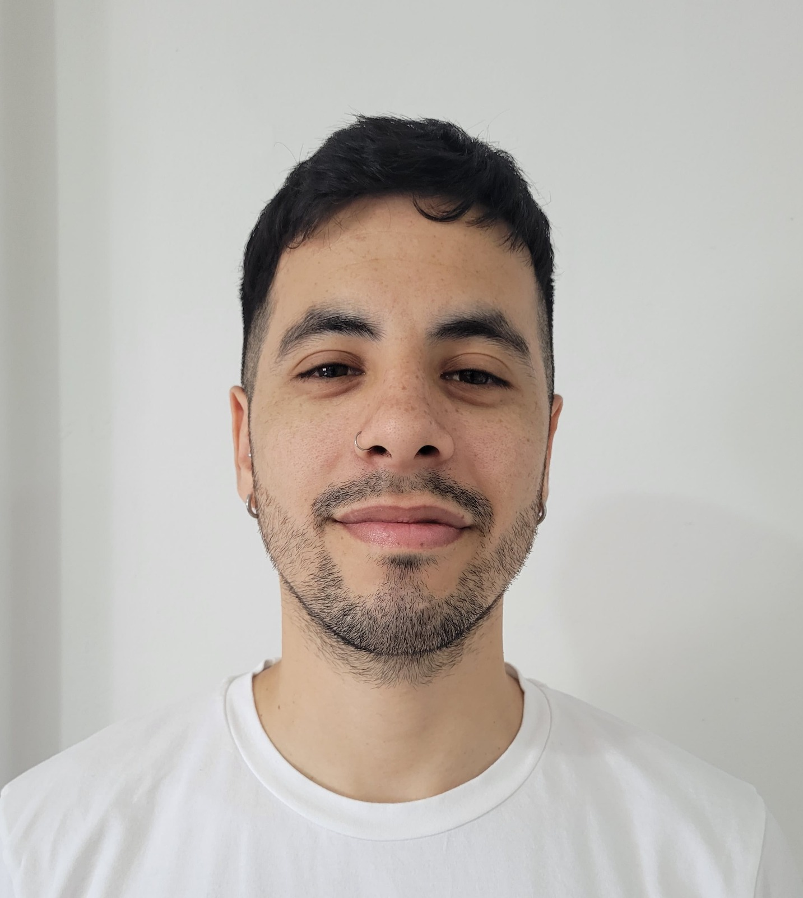
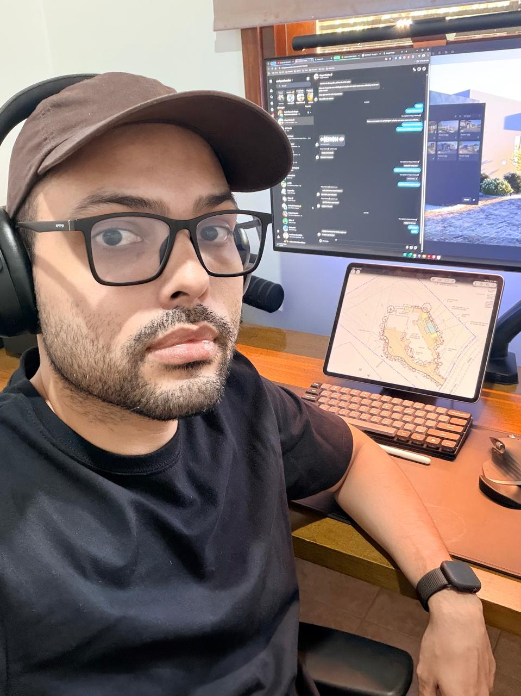
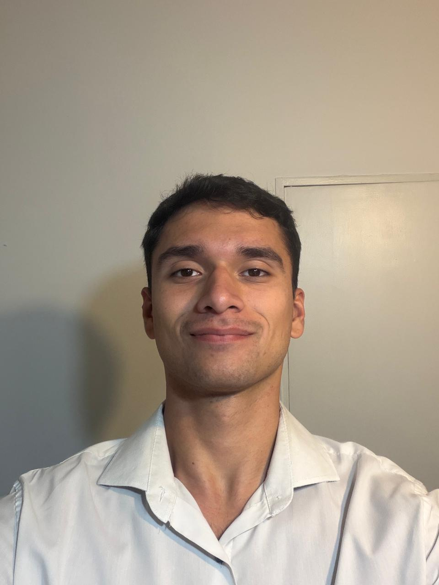
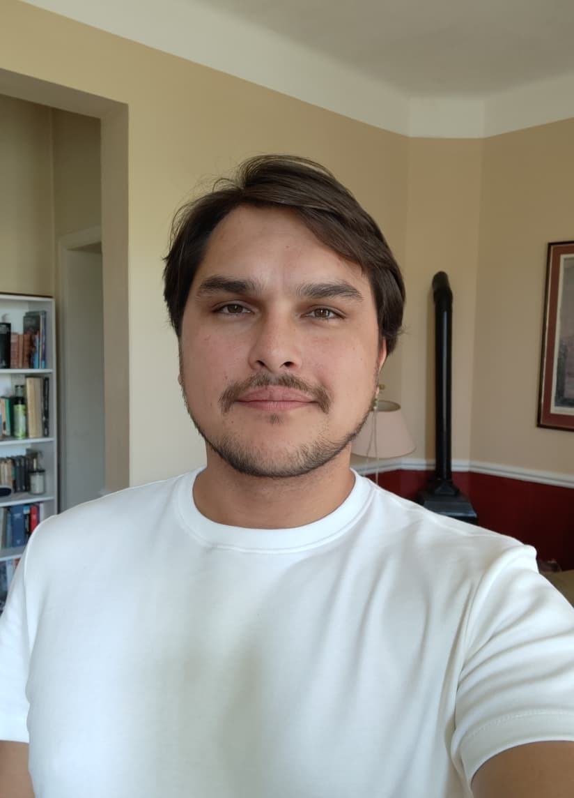

Quiénes somos
Ayudamos a las organizaciones a mejorar su eficiencia mediante soluciones tecnológicas confiables, escalables y centradas en el negocio. Nuestro objetivo es ser el socio tecnológico de referencia para empresas que quieren innovar y crecer.
Misión
Ayudar a las organizaciones a mejorar su eficiencia mediante soluciones tecnológicas confiables y centradas en el negocio.
Visión
Ser un socio tecnológico de referencia para empresas que buscan innovar y crecer a través del software.
Valores
Equipo profesional
¡Conocé a cada integrante de nuestro equipo!

Dutto, Federico Nicolás
32 años, Buenos Aires. Analista Programador Mainframe, mantenimiento de aplicaciones sobre IBM z/OS. Estudiante de Licenciatura en Tecnologías de la Información en UADE.

Enriquez, Leandro Ezequiel
32 años, Misiones. Arquitecto y técnico en programación. Trabaja remotamente para empresas de Estados Unidos. Cursa la Licenciatura en Sistemas en UADE.
Montenegro, Ticiana Rocío
20 años, Neuquén. Técnica Química y estudiante de la Licenciatura en Gestión de Tecnología de la Información en UADE.

Neme, Agustín Nadim
22 años, Buenos Aires. Analista de Precios en la industria farmacéutica y estudiante de Gestión de Tecnologías de la Información en UADE.

Purtscher, Erik Cristopher
31 años, Chubut. Técnico Electromecánico y Analista Funcional IT. Cursa la Licenciatura en Gestión de Tecnología de la Información en UADE.